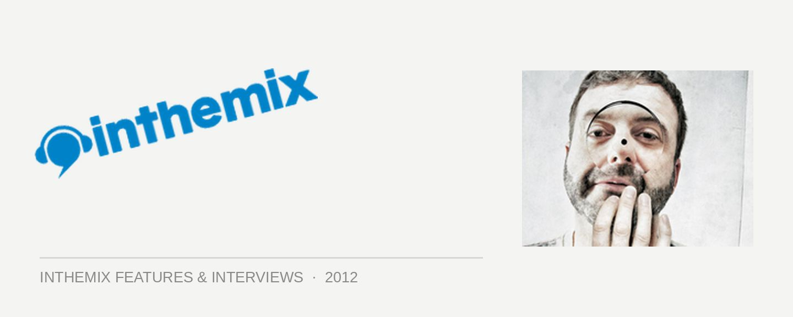

Funk D’Void: Built to last
Having joined the esteemed ranks of the Balance series, Glaswegian house and techno specialist Funk D’Void has touched down in Australia to show off his smarts. Ahead of the tour, inthemix got the man otherwise known as Lars Sandberg on the phone for a frank one-on-one. Over the course of our chat, Sandberg touched on his “classic lazy artist” syndrome, the vote-of-confidence that a Balance volume embodies, and the fight against dance music’s in-built disposability.
When the Balance offer came to you, where was your head at musically?
I’ve had a really bad dry spell creatively, I haven’t really been inspired for months. It always happens to me once in a while, when I don’t do music, I just do other stuff, which is fine. I’ve been DJing for nearly 25 years now, and I still get gigs all the time so there’s no worry with the gigs. So I’m not chasing the dollar. I love my job and this is the way I work. But I can’t always be inspired all the time, it’s not like a button I can press, I’m not one of those guys who can churn out an Identi-Kit tech-house monster every week. I have to be inspired, and I have to have a reason to write music. It could be months, or it could be a year, six months, two months, whatever. It changes every time. Recently I’ve been hanging out with my kids; we had a really nice summer together, so that’s given me a lot of inspiration. Taking some time out.
The Balance project was a really big thing for me as well. It was such a blessing for me to be asked to do it, an honour for me, as it’s probably one of the most respected series out there. And the actual talent they’ve had in the past is really high. So that’s given me something to do over the past few months, and also, I’ve tried to kind of spread the more deep, underground thing that’s going on. That was an inspiring moment, to be asked to do this release, so that’s what I’ve been working on recently.
Now I’m working on the next phase of the label, listening to new artists, a few guys that I’m working with at the moment that…I have to be a big fan of the music first before I release it, but Outpost has been going since 2010. I really wanted to have a label that would put out stuff I would play, at a certain time, in a certain club. That’s kind of the definition of my label.
The way we absorb music is changing; there does seem to be an expectation of a constant churn of tracks.
There’s definitely a happy medium there, I definitely need to pull my finger out for sure. It’s just a combination of things; busy with the kids as I’m a single parent, and looking after two kids takes a lot of my time. I did change the way that work at the beginning of this year. I tried to get more interested in the way to write music. When it happens it happens in spurts, four or five tracks over a couple of months. I think I’m a classic lazy artist. I do enjoy living, and I do enjoy spending time with my kids, and trying to be a good father is the number-1 priority for me. But the music has always been with me, it’s been in my blood, it’s my job and I love it.
But it’s nice to get the resurgence in respect and notoriety. When you get asked to do something as huge for me as a Balance CD. I did try and put my heart and soul into it, and tried to put a broad spectrum in what I like in electronic music. But it’s hard to please everybody, there are always going to be people who aren’t into it, and that’s why I kind of went through my whole collection and tried to have the memory imprint thing with the tracks. I remember when I was into that track at a certain point. These are the kind of tracks that stay with you. I think with electronic music, it’s even more difficult to have that special connection, especially if they’re not song based, as there’s hardly any vocals on there. So that was the challenge for me, to try and get that kind of feeling, the feeling I had with these tracks, see if it connected with anyone else.